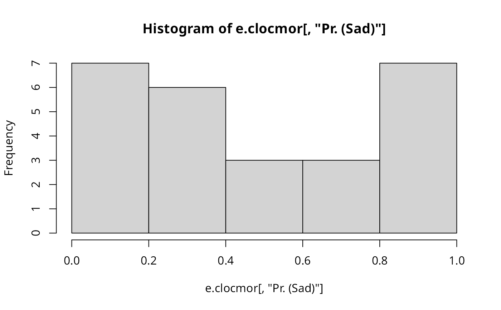

Saddlepoint approximation of local Moran's Ii tests
localmoran.sad.RdThe function implements Tiefelsdorf's application of the Saddlepoint
approximation to local Moran's Ii's reference distribution. If the model
object is of class "lm", global independence is assumed; if of class
"sarlm", global dependence is assumed to be represented by the spatial
parameter of that model. Tests are reported separately for each zone
selected, and may be summarised using summary.localmoransad.
Values of local Moran's Ii agree with those from localmoran(),
but in that function, the standard deviate - here the Saddlepoint
approximation - is based on the randomisation assumption.
localmoran.sad(model, select, nb, glist=NULL, style="W", zero.policy=NULL, alternative="greater", spChk=NULL, resfun=weighted.residuals, save.Vi=FALSE, tol = .Machine$double.eps^0.5, maxiter = 1000, tol.bounds=0.0001, save.M=FALSE, Omega = NULL) # S3 method for localmoransad print(x, ...) # S3 method for localmoransad summary(object, ...) # S3 method for summary.localmoransad print(x, ...) listw2star(listw, ireg, style, n, D, a, zero.policy=NULL)
Arguments
| model | an object of class |
|---|---|
| select | an integer vector of the id. numbers of zones to be tested; if missing, all zones |
| nb | a list of neighbours of class |
| glist | a list of general weights corresponding to neighbours |
| style | can take values W, B, C, and S |
| zero.policy | default NULL, use global option value; if TRUE assign zero to the lagged value of zones without neighbours, if FALSE assign NA |
| alternative | a character string specifying the alternative hypothesis, must be one of greater (default), less or two.sided. |
| spChk | should the data vector names be checked against the spatial objects for identity integrity, TRUE, or FALSE, default NULL to use |
| resfun | default: weighted.residuals; the function to be used to extract residuals from the |
| save.Vi | if TRUE, return the star-shaped weights lists for each zone tested |
| tol | the desired accuracy (convergence tolerance) for |
| maxiter | the maximum number of iterations for |
| tol.bounds | offset from bounds for |
| save.M | if TRUE, save a list of left and right M products in a list for the conditional tests, or a list of the regression model matrix components |
| Omega | A SAR process matrix may be passed in to test an alternative hypothesis, for example |
| x | object to be printed |
| object | object to be summarised |
| ... | arguments to be passed through |
| listw | a |
| ireg | a zone number |
| n | internal value depending on listw and style |
| D | internal value depending on listw and style |
| a | internal value depending on listw and style |
Details
The function implements the analytical eigenvalue calculation together with trace shortcuts given or suggested in Tiefelsdorf (2002), partly following remarks by J. Keith Ord, and uses the Saddlepoint analytical solution from Tiefelsdorf's SPSS code.
If a histogram of the probability values of the saddlepoint estimate for the assumption of global independence is not approximately flat, the assumption is probably unjustified, and re-estimation with global dependence is recommended.
No n by n matrices are needed at any point for the test assuming no global dependence, the star-shaped weights matrices being handled as listw lists. When the test is made on residuals from a spatial regression, taking a global process into account. n by n matrices are necessary, and memory constraints may be reached for large lattices.
Value
A list with class localmoransad containing "select" lists, each with
class moransad with the following components:
the value of the saddlepoint approximation of the standard deviate of local Moran's Ii.
the p-value of the test.
the value of the observed local Moran's Ii.
a character string describing the alternative hypothesis.
a character string giving the method used.
a character string giving the name(s) of the data.
Saddlepoint omega, r and u
degrees of freedom
maximum and minimum analytical eigenvalues
zone tested
References
Tiefelsdorf, M. 2002 The Saddlepoint approximation of Moran's I and local Moran's Ii reference distributions and their numerical evaluation. Geographical Analysis, 34, pp. 187--206.
See also
Examples
if (require(rgdal, quietly=TRUE)) { eire <- readOGR(system.file("shapes/eire.shp", package="spData")[1]) row.names(eire) <- as.character(eire$names) proj4string(eire) <- CRS("+proj=utm +zone=30 +ellps=airy +units=km") eire.nb <- poly2nb(eire) lw <- nb2listw(eire.nb) e.lm <- lm(OWNCONS ~ ROADACC, data=eire) e.locmor <- summary(localmoran.sad(e.lm, nb=eire.nb)) e.locmor mean(e.locmor[,1]) sum(e.locmor[,1])/Szero(lw) lm.morantest(e.lm, lw) # note equality for mean() only when the sum of weights equals # the number of observations (thanks to Juergen Symanzik) hist(e.locmor[,"Pr. (Sad)"]) e.wlm <- lm(OWNCONS ~ ROADACC, data=eire, weights=RETSALE) e.locmorw1 <- summary(localmoran.sad(e.wlm, nb=eire.nb, resfun=weighted.residuals)) e.locmorw1 e.locmorw2 <- summary(localmoran.sad(e.wlm, nb=eire.nb, resfun=rstudent)) e.locmorw2 e.errorsar <- errorsarlm(OWNCONS ~ ROADACC, data=eire, listw=lw) e.errorsar lm.target <- lm(e.errorsar$tary ~ e.errorsar$tarX - 1) Omega <- tcrossprod(invIrW(lw, rho=e.errorsar$lambda)) e.clocmor <- summary(localmoran.sad(lm.target, nb=eire.nb, Omega=Omega)) e.clocmor hist(e.clocmor[,"Pr. (Sad)"]) }#> OGR data source with driver: ESRI Shapefile #> Source: "/home/rsb/lib/r_libs/spData/shapes/eire.shp", layer: "eire" #> with 26 features #> It has 10 fields